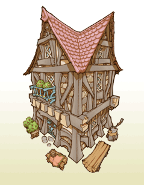
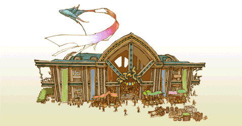

22 |
建物の種類 |
 |
王様が建築術で建てられる建物の一部を紹介します。 ●民家  小さな家：２人暮らしの家族を呼ぶ家。少しの精霊力で建てることができるので、迷ったらひとまずこの小さな家を建ててみましょう。 広い家：敷地が広くて、建築するのに多くの精霊力が必要な家。その分やってくる家族も多いので、税金もたくさん納めてもらえますが、冒険者になれる若者は他の民家と同じく、1人だけです。 |
●住民のお店 パン屋：城下町の住民が毎日買い物をする店。ここで買い物をすることで、街の人たちは幸せになります。 商館：住民が買い物をすることで幸せになる店。さらに、王国内のお店に新商品のアイディアを与える効果もあります。  |
●冒険者のお店 武器屋：冒険者の買う武器を売る店。戦士の攻撃力が不足しているようなら、ここに投資するのも良いでしょう。  防具屋：敵から身を守る防具を売る店。冒険者がすぐやられて帰ってきてしまう時は、防具屋を建てましょう。
防具屋：敵から身を守る防具を売る店。冒険者がすぐやられて帰ってきてしまう時は、防具屋を建てましょう。道具屋：冒険に使う道具を売る店。回復魔法の使えない冒険者も、この店の回復アイテムを使うことで傷を癒すことができます。 |
●冒険者の建物  白魔法学院：白魔道士を育てる魔法の学院。投資することで覚えられる魔法の種類を増やすことができます。
白魔法学院：白魔道士を育てる魔法の学院。投資することで覚えられる魔法の種類を増やすことができます。黒魔法学校：黒魔道士を育てる魔法の学校。投資することで覚えられる魔法の種類を増やすことができます。 訓練場：冒険者を鍛える場所。経験を積むだけではなく、戦士のアビリティもここで覚えることができます。 遊技場：シーフのアビリティを教える場所。シーフではない冒険者も、ここで遊んで賞金をかせぐことができます。 |
●特殊な建物  ギルド：冒険者の数や日給を扱う建物。ギルドにお金を払えば、冒険者の最大人数や日給を増やすことができます。 酒場：一緒に冒険をする仲間を探せる店。冒険者は各々の判断でパーティを組みますが、王様直属のパーティを組ませることも可能です。 宿屋：他の国から旅人がやってくる建物。クラヴァットの冒険者や、その他の種族の旅人が訪れ、国造りの手助けをしてくれます。 |
●公園  噴水の公園：国民に休息を与える空間。癒しを求める冒険者が、リフレッシュのためにここに集います。
噴水の公園：国民に休息を与える空間。癒しを求める冒険者が、リフレッシュのためにここに集います。立て札の公園：おふれの数を増やす公園。複数のおふれを出したいときに建てましょう。 |
 |
 |
 |